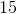
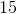

Subiectul I
- Un corp are viteza
 și accelerația
și accelerația  . Mișcarea corpului are loc sub acțiunea forței rezultante
. Mișcarea corpului are loc sub acțiunea forței rezultante  . Acceleraţia corpului este orientată:
. Acceleraţia corpului este orientată:
a. perpendicular pe traiectoria corpului
b. tangent la traiectoria corpului
c. paralel şi în acelaşi sens cu
d. paralel şi în acelaşi sens cu
Răspuns:
- paralel şi în acelaşi sens cu
Pentru ca doi vectori să fie egali, trebuie să aibă acelaşi modul (valoare), aceeaşi direcţie şi acelaşi sens.
Din princiul al doilea al dinamicii, avem:

Deoarece masa este o mărime fizică scalară, ea nu contribuie decât cu mărimea ei la vectorul final.
Aşadar, direcţia şi sensul produsului  este dată doar de acceleraţie.
este dată doar de acceleraţie.
Cum , direcţia şi sensul acceleraţiei trebuie să fie aceleaşi cu direcţia şi sensul forţei .
Deci, acceleraţia corpului este orientată paralel şi în acelaşi sens cu .
- Simbolurile fiind cele utilizate în manualele de fizică, expresia matematică a legii lui Hooke este:
a.  b.
b.  c.
c.  d.
d. 
Răspuns:
Conform legii lui Hooke avem:
 .
.
- Acceleraţia unui mobil variază în timp după legea
 . Unitatea de măsură în S.I. a mărimii
. Unitatea de măsură în S.I. a mărimii  este:
este:
a.  b.
b.  c.
c.  d.
d. 
Răspuns:
![\Rightarrow [a]_{ _{SI}}=[A+B\cdot t]_{ _{SI}}=\frac{m}{s^2}](https://liceunet.ro/media/webbooks/678/5524/images/equations/pxjg8cn-ovko5pkfved6fa==.gif)
![\Rightarrow [A]_{ _{SI}}=\frac{m}{s^2}](https://liceunet.ro/media/webbooks/678/5524/images/equations/z8i8l56aumzbcwxmzfoy8q==.gif)
![\Rightarrow [B\cdot t]_{ _{SI}}=\frac{m}{s^2}](https://liceunet.ro/media/webbooks/678/5524/images/equations/jt5mink7qeoph76-_nunww==.gif)
![\Leftrightarrow [B]_{ _{SI}}\cdot [t]_{ _{SI}}=\frac{m}{s^2}](https://liceunet.ro/media/webbooks/678/5524/images/equations/frzmwjw8ow_tkpaes84ocw==.gif)
![\Rightarrow [B]_{ _{SI}}\cdot s=\frac{m}{s^2}](https://liceunet.ro/media/webbooks/678/5524/images/equations/42fcovp0gws614b-x3adfq==.gif)
![\begin{align*} \Leftrightarrow [B]_{ _{SI}}&=\frac{m}{s^3} =m\cdot s^{-3} \end{align*}](https://liceunet.ro/media/webbooks/678/5524/images/equations/xbt_-rqyu_-jyjrfepyhog==.gif) .
.
- O locomotivă cu puterea

 tractează un tren cu masa
tractează un tren cu masa 
 . Forţa de rezistență la înaintare întâmpinată de tren reprezintă o fracţiune
. Forţa de rezistență la înaintare întâmpinată de tren reprezintă o fracţiune  din greutatea acestuia. La un moment dat viteza trenului este
din greutatea acestuia. La un moment dat viteza trenului este  m/s . În acest moment, acceleraţia trenului are valoarea:
m/s . În acest moment, acceleraţia trenului are valoarea:
a.  b.
b.  m/s
m/s c.
c.  m/s d.
m/s d.  m/s
m/s
Răspuns:
- m/s


 .
.
- În graficul alăturat este reprezentată variația în timp a vitezei unui punct material de masă

 .
.

Forţa rezultantă sub acţiunea căreia se deplasează punctul material are valoarea de:
a. 
 b.  c.
b.  c.  d.
d. 
Răspuns:
Se observă din grafic că după  secunde, viteza corpului devine
secunde, viteza corpului devine  .
.


 .
.